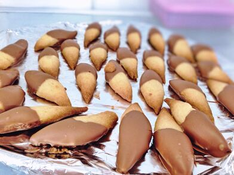

Sequilhos

Apos fazer as paginas da torta gelada e
do geladinho chegou a vez de partilhar a receite de sequilhos
. A grande vantagem da receita e que alem de ser mais simples e rapida que a torta e o geladinho ela requer
menos ingredientes ainda!
Ingredientes
- Farinha de trigo.
- Achocolatado (sim, nescau).
- Acucar refinado, caso nao tenha pode usar o cristal mesmo.
- Margarina, manteiga para os ricos 500g ou duas de 250g.
- Sal(opcional)
Utensilios
- Tigela.
- Forma de aluminio para assar os sequilhos
- Duas vasilhas
Modo de preparo
- Coloque a margarina na geladeira e espere 15 minutos.
- Em uma tigela adicione 250g de margarina gelada.
- Acrescente 2 xicaras de farinha de trigo ou 2,5 dependendo da conscistencia da que sua massa ficar
- 1 colher de sobremesa de acucar e sal.
- Amasse ate ficar com textura de massa, caso ela fique melequenta ou dura voce colocou farinha de menos ou margarina de mais, para
corrigir isso basta balancear com o ingrediente oposto.
- Uma situacao muito comum e voce comecar a misturar os ingredientes e parecer que a massa esta
se esfarelando, basta misturar durante mais um tempo.
- Se a massa nao estiver mais grudando na tigela significa que esta no ponto
- Ligue o forno para preaquecer
- Agora basta modelar os sequilhos e ir colocando na forma usando o formato que deseja, geralmente eu faco em cilindro com as
pontas afinadas, parecidos com o da foto.
- Coloque a forma no forno durante 10 a 15 minutos, cuidado
para nao deixar os sequilhos crus, e melhor ter eles um pouco queimadinhos do que crus.
- Para verificar se eles estao no ponto basta olhar se estao queimadinhos e/ou experimentar :P
- Depois de ter CERTEZA que eles estao no ponto ou ligeiramente queimados, tire-os do forno e deixa esfriando enquanto
preparamos o proximo passo.
- Prepare uma vasilha com o acucar refinado, o suficiente pra cobrir metade da altura dos sequilhos na horizontal.
- Agora vem a cobertura, esse e um processo parecido com o que fizemos com os biscoitos na torta gelada
, basta adicionar o nescau com POUCA agua e misturar, molhar metade ou o sequilho todo, retirar o excesso e jogar na vasilha de acucar, repita com todos os sequilhos.
- Balance a vasilha com os sequilhos ate ficarem completamente cobertos de acucar
- Rertire da vasilha de acucar, espere esfriar bem, guarde em um recipiente adequado(e.g. vasilha de sorvete) e ponha na geladeira.
Inicio